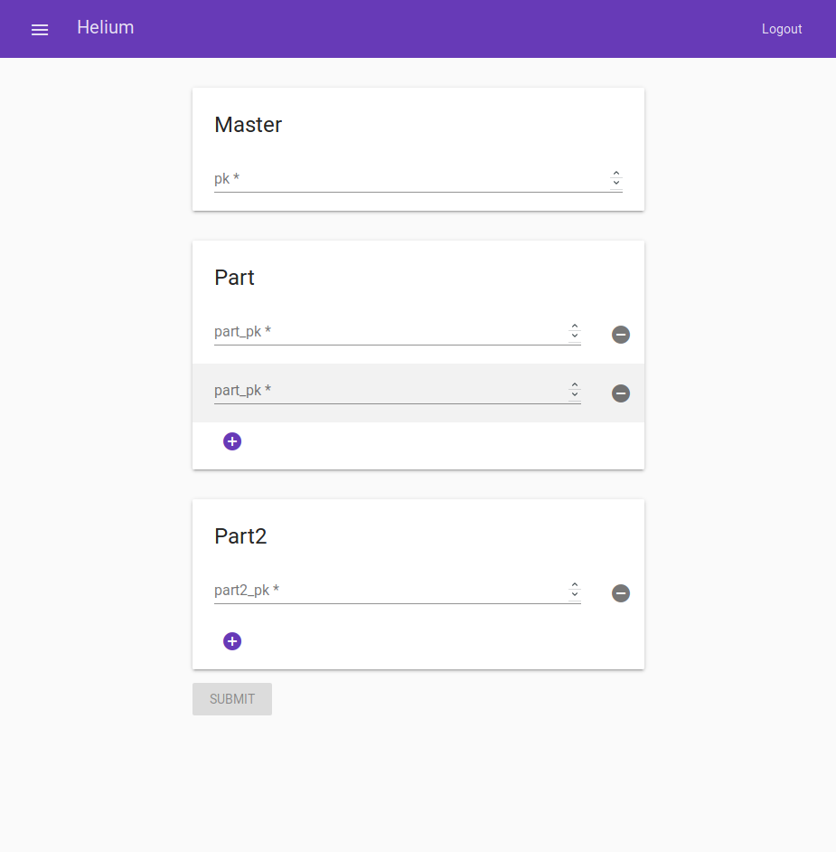
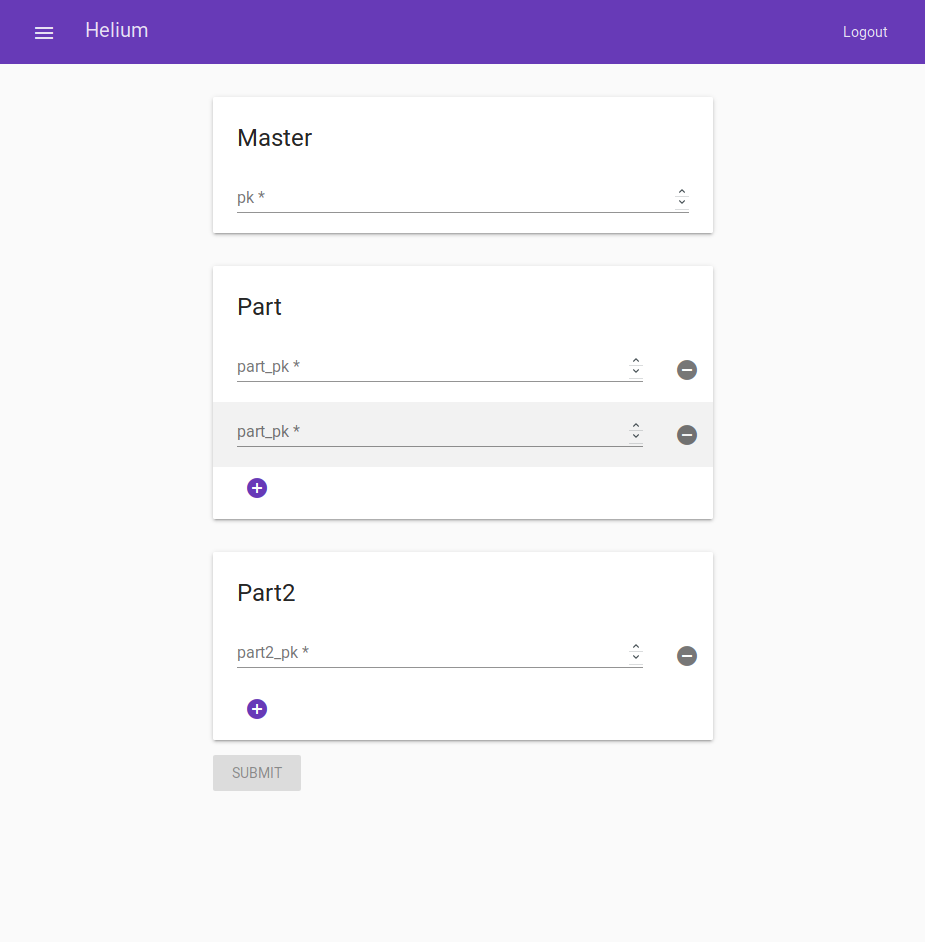

Helium was built to work with any database that utilizes the MySQL protocol such as MariaDB. Helium is aware of DataJoint conventions and as a result, Helium is smarter than your average database companion. It understands concepts such as the difference between a manual and a computed table.
 
